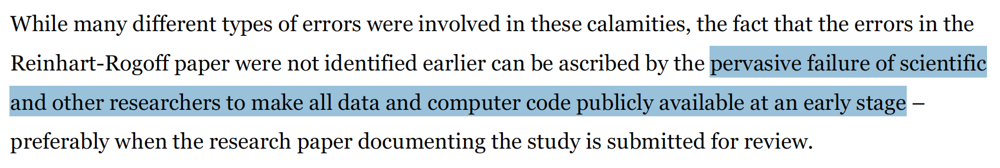
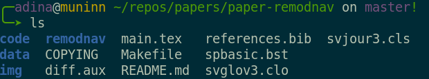
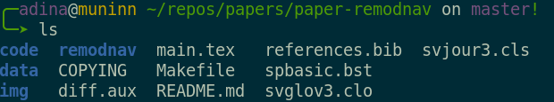
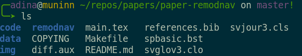

Research data management
üë©‚Äçüíªü뮂Äçüíª
with DataLad
Adina Wagner @AdinaKrik @AdinaKrik
|
Lennart Wittkuhn@lnnrtwttkhn
|
|
Psychoinformatics lab, Institute of Neuroscience and Medicine (INM-7) Research Center Jülich |
Max Planck Research Group NeuroCode, Max Planck Institute for Human Development, Berlin IMPRS COMP2PSYCH |
Slides: https://github.com/datalad-handbook/course/
welcome!
A few logistical things first:- An approximate schedule for today is on our companion workshop website (link is in the public notes). We'll try to stick to it
- Let us introduce the workshop organizers...
- Let us introduce the virtual workshop venue...
- Public and private chats
- Shared notes
- Break-out rooms
- Drop out and re-join as you please, make use of your status setting
Why are we here? ReproNim
- ReproNim is an initiative to improve the reproducibility and efficiency in neuroimaging
- It's goal is "to improve the reproducibility of neuroimaging science and extend the value of our national investment in neuroimaging research, while making the process easier and more efficient for investigators."
- ReproNim develops free training materials, supports tool development, and offers training activities. ReproNim fellows teach their peers in independent courses, workshops, or Hackathons about tools or methods that increase the reproducibility of their research.
What will we do today?
- The workshop centers around DataLad
- We aim to do more than a standard introduction by providing in-depth explanations, hands-on exercises, and discussions throughout the day
- (this will be much harder in this virtual setting - please bear with us)
Let's do the splits
Questions/interaction throughout the workshop
- If you have a question during a lecture, please first type your questions in the chat. There are no stupid questions :)
- It would be great to have lively discussions - unless its interrupting a speaker, please feel encouraged to unmute/turn on your video to interact with us.
- We're happy to discuss specific use cases at the end. Please make a note about them in the "Shared notes" of BigBlueButton
- We are recording the lectures and will make them available online
Questions/interaction after the workshop
-
If you have a question after the workshop, you can reach out for help:
- Reach out to to the DataLad team via
- Matrix (free, decentralized communication app, no app needed)
- or the development repository on GitHub
- Reach out to the user community with
- A question on neurostars.org
with a
dataladtag - Find more user tutorials and workshop recordings
- On DataLad's YouTube channel
- In the DataLad Handbook
Resources and Further Reading
|
Comprehensive user documentation in the DataLad Handbook (handbook.datalad.org) |
|
 |
|
 |
|
 |
|
Live polling system
What's your mood today?
What's your mood today?
Help us learn more about our audience
Live coding + hands-on
- Live-demonstration of DataLad examples and workflows
- Code along with copy-paste code snippets and hands-on exercises on the workshop website
- Requirements:
- Most recent DataLad version for your OS (installation instructions at handbook.datalad.org)
- For containerized analyses: DataLad extension datalad-containers (available via pip) + Singularity or Docker
Motivation
Real world examples for Research Data Management gone wrong ...
https://www.theguardian.com/politics/2020/oct/05/how-excel-may-have-caused-loss-of-16000-covid-tests-in-england
Real world examples for Research Data Managament gone wrong ...

https://theconversation.com/the-reinhart-rogoff-error-or-how-not-to-excel-at-economics-13646
Real world examples for Research Data Managament gone wrong ...

https://www.theverge.com/2020/8/6/21355674/human-genes-rename-microsoft-excel-misreading-dates
Real world example closer to home:
"Replication crisis" in Psychology / Neuroscience
taken from "A manifesto for reproducible science" by Munafò et al., 2017, Nature Human Behavior
Defining replicability
| Same data | New data | |
| Same methods | Reproducibility |
Replication |
| New methods | Robustness | Generalization |
see e.g., Freese & Peterson, 2017
Why version control?

- keep things organized
- keep track of changes
- revert changes or go back to previous states
Data change!

- New data are added and old data removed
- Erros are detected, fixed and introduced again üëª
- Separate data versions are created or merged
Methods documentation and provenance
Analytic flexibility leads to sizeable variations in results(see e.g., Carp. 2012 and Botvinik-Nezer, 2020 for examples from neuroimaging)

- provide information on how data came into existence
- change data through documented code, not manually
- relate changes in data to changes in code
What's holding you back?
Hand on heart: Have you heard / said / thought these statements* before?
* cf. Markowetz, 2015 |
But what's in it for me? "Selfish" reasons for reproducibility
"[...] science is all about more publications, more impact factor, more money and more career. More, more, more ...So how does working reproducibly help me achieve more as a scientist." - Markowetz, 2015
- You want to avoid the disaster of publishing "a miracle"
- You will be faster (in the long run)
- Finding and fixing errors will be faster
- Progress on new projects will happen faster
- Researchers (reviewers!) will have more trust in your findings
- Data sharing can foster collaboration (with your past self, inside and outside your institution) and lead to new projects and publications
- You acquire (technical) skills that will likely become increasingly important for your career, either in academia or industry
- ... and more!
see e.g., Markowetz, 2015, Genome Biology; Poldrack, 2019, Neuron
Common problems in science
You write a paper about an algorithm, stay up
late to generate good-looking figures, but you have to tweak parameters and
display options to make it work AND look good. The next morning, you have no
idea which parameters produced which figures, and which of the figures
fits to what you report in the paper.


Illustration adapted from Scriberia and The Turing Way
https://co.pinterest.com/pin/551128073121451139//imgcredit>
http://phdcomics.com/comics.php?f=1693
http://phdcomics.com/comics.php?f=1693
http://phdcomics.com/comics.php?f=1693

 
File viewer and terminal view of a DataLad dataset

File viewer and terminal view of a DataLad dataset


Apart from local computing infrastructure (from private laptops to computational clusters), datasets can be hosted in major third party repository hosting and cloud storage services. More info: Chapter on Third party infrastructure.
Let's have a ☕, and then get started
Common problems in science
Your research project produces phenomenal results, but your laptop,
the only place that stores the source code for the results, is
stolen/breaks

Common problems in science
A graduate student approaches their supervisor, complaining that the
supervisors research idea does not work. After weeks of discussion,
it becomes apparent that oral communication doesn't suffice - the
student can't sufficiently explain the environment (data, algorithms,
...) they constructed, and if the supervisor can't enter and use the
students project there's no way to find a fix.

Common problems in science
A Post-doc wrote a script during the PhD that applied a specific
method to a dataset. Now, with new data and a new project, they
try to reuse the script, but forgot how it worked.

common problems in science
You try to recreate results from another lab's published paper.
You base your re-implementation on everything reported in their paper,
but the results you obtain look nowhere like the original.
common old problems in science
All these problems were paraphrased from
Buckheit & Donoho, 1995
Why don't we make our live easier?
Both for you and your future self, as well as
for science as a whole?
The tools exist, and are getting easier and
easier to use. Sometimes, you only need to know that something exists
to get started with it.
- A command-line tool, available for all major operating systems (Linux, macOS/OSX, Windows), MIT-licensed
- Build on top of Git and Git-annex
- Allows...
- ... version-controlling arbitrarily large content
- version control data and software alongside to code!
- ... transport mechanisms for sharing and obtaining data
- consume and collaborate on data (analyses) like software
- ... (computationally) reproducible data analysis
- Track and share provenance of all digital objects
- ... and much more
- Completely domain-agnostic
Acknowledgements
|
Funders


Collaborators
|
Core concepts & features
Everything happens in DataLad datasets
Dataset = Git/git-annex repository
- content agnostic
- no custom data structures
- complete decentralization
- Looks and feels like a directory on your computer:

File viewer and terminal view of a DataLad dataset
version control arbitrarily large files
- Non-complex DataLad core API (easy for data management novices)
- Pure Git or git-annex commands (for regular Git or git-annex users, or to use specific functionality)
Stay flexible:
Use a datasets' history
- reset your dataset (or subset of it) to a previous state,
- revert changes or bring them back,
- find out what was done when, how, why, and by whom
- Identify precise versions: Use data in the most recent version, or the one from 2018, or...
Consume and collaborate
machine-readable, re-executable provenance
Seamless nesting and dataset linkage
Third party integrations
Apart from local computing infrastructure (from private laptops to computational clusters), datasets can be hosted in major third party repository hosting and cloud storage services. More info: Chapter on Third party infrastructure.
Examples of what DataLad can be used for:
- Publish or consume datasets via GitHub, GitLab, OSF, or similar services

Examples of what DataLad can be used for:
- Behind-the-scenes infrastructure component for data transport and versioning (e.g., used by OpenNeuro, brainlife.io , the Canadian Open Neuroscience Platform (CONP), CBRAIN)

Examples of what DataLad can be used for:
- Creating and sharing reproducible, open science: Sharing data, software, code, and provenance

Examples of what DataLad can be used for:
- Central data management and archival system

Concepts
What is version control?
- What have I done? ü§î
- Version control tracks the history of changes in files
- Who made the changes? Who else worked on the file? ü§î
- Version control tracks who made which changes when
- What's the difference between analysis.py and analysis_new.py? ü§î
- Version control enables work on separate versions of a file
... and many more!
Let's have a ☕, and then get started